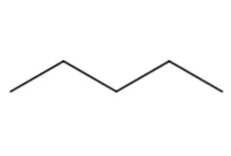
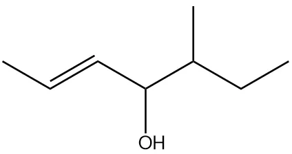
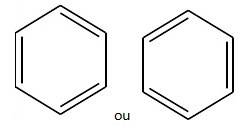

Na estrutura CH₃—CH₂—CH₃, qual alternativa indica o número total de carbonos e o número de ligações do carbono central, incluindo as ligações com hidrogênio?
O que é? A Química Orgânica é o ramo da Química que estuda os compostos que contêm carbono, chamados de compostos orgânicos.
✧ Atenção: nem todo composto com carbono é orgânico.
Ex.: CO₂ (dióxido de carbono), HCN (ácido cianídrico), carbonatos (Na₂CO₃, CaCO₃) são inorgânicos.
Ex.: CO₂ (dióxido de carbono), HCN (ácido cianídrico), carbonatos (Na₂CO₃, CaCO₃) são inorgânicos.
Exemplos de orgânicos: plásticos, medicamentos, vitaminas, combustíveis, proteínas, DNA, açúcares, gorduras.
⚠️ Teoria da Força Vital (derrubada em 1828):
Friedrich Wöhler sintetizou ureia (composto orgânico) a partir de cianato de amônio (inorgânico).
Isso provou que compostos orgânicos podem ser feitos em laboratório, sem "força vital".
Friedrich Wöhler sintetizou ureia (composto orgânico) a partir de cianato de amônio (inorgânico).
Isso provou que compostos orgânicos podem ser feitos em laboratório, sem "força vital".
Histórico da Química Orgânica:
- Antes de Cristo: Sabão de cinzas, álcool por fermentação, corantes naturais.
- 1780: Bergman distingue compostos inorgânicos e orgânicos.
- 1807: Berzelius cria a expressão "Química Orgânica".
- 1828: Wöhler sintetiza ureia → fim da Teoria da Força Vital.
- 1857-58: Kekulé e Couper: carbono faz 4 ligações e forma cadeias.
- 1865: Kekulé propõe estrutura cíclica do benzeno (inspirado em sonho com uma cobra).
- 1874: van't Hoff e Le Bel: geometria tetraédrica do carbono.
- 1953: Watson e Crick elucidam estrutura do DNA.

DNA · exemplo de composto orgânico complexo
Molécula que contém carbono, hidrogênio, oxigênio, nitrogênio e fósforo
Aplicações Fármacos, polímeros, agroquímicos, cosméticos, combustíveis, alimentos, tecidos.
Para descrever a maneira como os átomos estão unidos formando a cadeia carbônica, os químicos estabeleceram uma linguagem apropriada baseada em critérios de classificação.
1. Cadeia Aberta ou Fechada
Aberta (acíclica ou alifática)
Os carbonos não formam um ciclo. Possui extremidades.
CH₃—CH₂—CH₂—CH₃
Os carbonos não formam um ciclo. Possui extremidades.
CH₃
—
CH₂
—
CH₂
—
CH₃
butano (cadeia aberta)
Fechada (cíclica)
Os carbonos formam um ciclo (anel).

Os carbonos formam um ciclo (anel).
ciclo-hexano (cadeia fechada)
2. Cadeia Homogênea ou Heterogênea
Homogênea
Não possui heteroátomo (O, S, N, P) entre carbonos.
CH₃—CH₂—CH₃
Não possui heteroátomo (O, S, N, P) entre carbonos.
CH₃
—
CH₂
—
CH₃
propano (apenas C e H)
Heterogênea
Possui heteroátomo (O, S, N, P) entre carbonos.
CH₃—O—CH₃
Possui heteroátomo (O, S, N, P) entre carbonos.
CH₃
—
O
—
CH₃gi
éter dimetílico (com heteroátomo O)
3. Cadeia Saturada ou Insaturada
Saturada
Possui apenas ligações simples (—) entre carbonos.
CH₃—CH₂—CH₂—CH₃
Possui apenas ligações simples (—) entre carbonos.
CH₃
—
CH₂
—
CH₂
—
CH₃
butano
Insaturada
Possui pelo menos uma ligação dupla (=) ou tripla (≡).
CH₃—CH₂—CH=CH₂
Possui pelo menos uma ligação dupla (=) ou tripla (≡).
CH₃
—
CH₂
—
CH
CH₂
but-1-eno (com dupla ligação)
4. Cadeia Aberta: Normal ou Ramificada
Os átomos de carbono não formam anel (ciclo), ou seja, as extremidades são "livres".
Normal (não ramificada)
Todos os carbonos estão em linha reta (sequência única).
Todos os carbonos estão em linha reta (sequência única).

pentano
Ramificada
Possui carbonos fora da cadeia principal.

Exemplo: 5-metilhept-2-en-4-ol
5. Cadeia Fechada: Aromática ou Alicíclica
Aromática
Possui anel benzênico (com ressonância).

Exemplo: benzeno (anel aromático)
Alicíclica (não aromática)
Ciclo sem anel benzênico.
Exemplo: ciclo-hexano (anel não aromático)
📌 Atenção: acíclico não é a mesma coisa que alicíclico!
Acíclico (com “a” na frente) = cadeia aberta, sem formação de anel.
Exemplo: N-etil-N-metilpropan-2-amina (cadeia aberta).
Alicíclico (com “ali” na frente) = cadeia fechada que não é aromática.
Exemplo: ciclo-hexano (cadeia fechada não aromática).
Dica: acíclico = sem ciclo; alicíclico = com ciclo, mas não aromático.
Resumo da Classificação das Cadeias Carbônicas
| Critério | Classificação | Característica |
|---|---|---|
| 1. Abertura | Aberta (acíclica/alifática) | Não forma ciclo, possui extremidades |
| Fechada (cíclica) | Forma um ciclo (anel) | |
| 2. Composição | Homogênea | Sem heteroátomo entre carbonos |
| Heterogênea | Com heteroátomo (O, S, N, P) entre carbonos | |
| 3. Ligações | Saturada | Apenas ligações simples (—) |
| Insaturada | Com dupla (=) ou tripla (≡) | |
| 4. Ramificação (aberta) |
Normal | Não ramificada (em linha reta) |
| Ramificada | Com carbonos fora da cadeia principal | |
| 5. Tipo de ciclo (fechada) |
Aromática | Com anel benzênico (ressonância) |
| Alicíclica | Sem anel benzênico | |
| 6. Mista | Mista | Parte cíclica + carbono(s) fora do ciclo |
📌 Como chegamos no nome?
5-metilhept-2-en-4-ol
- Cadeia principal: Possui 7 carbonos (prefixo hept), englobando a ligação dupla e o grupo álcool.
- Numeração: Começa da esquerda para a direita para dar o menor número possível à insaturação (posição 2 em vez de 5), já que o grupo funcional (—OH) fica na posição 4 de ambos os lados.
- Insaturação: Ligação dupla no carbono 2 (-2-en).
- Grupo funcional: Álcool no carbono 4 (-4-ol).
- Ramificação: Grupo metil no carbono 5 (5-metil).
📍 Numeração da cadeia principal:
C1: Extremidade esquerda C2 e C3: Carbonos da ligação dupla C4: Vértice com a hidroxila (—OH) para baixo C5: Vértice com o metil (—CH₃) para cima C6: Vértice seguinte descendo C7: Extremidade direita
C1: Extremidade esquerda C2 e C3: Carbonos da ligação dupla C4: Vértice com a hidroxila (—OH) para baixo C5: Vértice com o metil (—CH₃) para cima C6: Vértice seguinte descendo C7: Extremidade direita